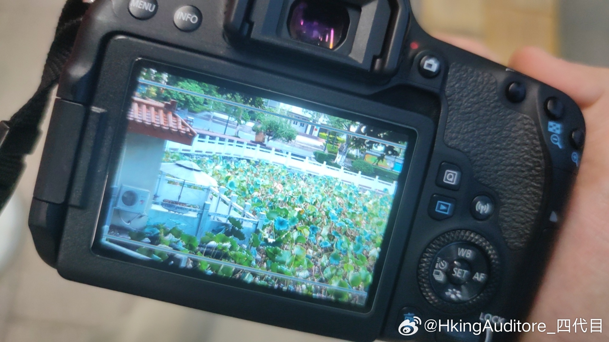

晚安
今天下午揣着相机去开公交盲盒，随便上辆车随便到个站下车。本来想趁着下午的太阳试一下新买的镜头，结果没过二十分钟太阳就被云挡着了，不过好在云不算厚实，有些零碎的金光能透出来。
一路走到江边，高中的时候每次周末回家都是走这条路，当时也总乘着这样的夕阳回家。河对岸朝西，如果天气好，一到时间就能看到沿着一条江岸的堤坝被涂成金色，连同起伏的江水反射，在堤坝上打上一连串纠缠的金色螺旋线。
但那时我是没机会下车拍照的。只能坐在车窗边看着金光渐渐暗淡，光线逐渐倾斜，到连行驶的车影也能映在对面的河堤上，到人造灯光和夕阳交相辉映，再到城市逐渐被霓虹淹没。
“下次有机会我要在下午来江边拍照。”——然后下次一定就搁置了。
沿着这条路一直往高中走，发现好多以前常吃的小店已经改换门庭，甚至是改换门庭后的店门口也贴上了“旺铺招租”，要么是连店面也不存在了，老操场上盖起了楼盘，学校扩建把后山都干掉了，还建起了一个比景区门口还夸张的大门。我想到高二时上摄影课时老师放出来的那些二三十年前北中的校门照片，当时我们还惊讶于那张照片里狭小的校门(我现在都不知道那个校门是现在的哪里)，但八年之后，现在的同学们看我就像我看以前的人一样了。我离2016年的距离，就和离2030年一样远。
以前北中大门敞开随便进出，自从疫情后这种自由就再也没有了。我绕着墙转了一圈，从栏杆缝隙伸头往里面看，就这也被保安叫住了。
我爸总是和我说，拍照不要老是拍景，要拍人，因为景过了几年还是那样子，但是人过了那个瞬间就没有了，但几年不变的景我又怎么知道我下次见到它时是什么时候呢。
今天下午揣着相机去开公交盲盒，随便上辆车随便到个站下车。本来想趁着下午的太阳试一下新买的镜头，结果没过二十分钟太阳就被云挡着了，不过好在云不算厚实，有些零碎的金光能透出来。
一路走到江边，高中的时候每次周末回家都是走这条路，当时也总乘着这样的夕阳回家。河对岸朝西，如果天气好，一到时间就能看到沿着一条江岸的堤坝被涂成金色，连同起伏的江水反射，在堤坝上打上一连串纠缠的金色螺旋线。
但那时我是没机会下车拍照的。只能坐在车窗边看着金光渐渐暗淡，光线逐渐倾斜，到连行驶的车影也能映在对面的河堤上，到人造灯光和夕阳交相辉映，再到城市逐渐被霓虹淹没。
“下次有机会我要在下午来江边拍照。”——然后下次一定就搁置了。
沿着这条路一直往高中走，发现好多以前常吃的小店已经改换门庭，甚至是改换门庭后的店门口也贴上了“旺铺招租”，要么是连店面也不存在了，老操场上盖起了楼盘，学校扩建把后山都干掉了，还建起了一个比景区门口还夸张的大门。我想到高二时上摄影课时老师放出来的那些二三十年前北中的校门照片，当时我们还惊讶于那张照片里狭小的校门(我现在都不知道那个校门是现在的哪里)，但八年之后，现在的同学们看我就像我看以前的人一样了。我离2016年的距离，就和离2030年一样远。
以前北中大门敞开随便进出，自从疫情后这种自由就再也没有了。我绕着墙转了一圈，从栏杆缝隙伸头往里面看，就这也被保安叫住了。
我爸总是和我说，拍照不要老是拍景，要拍人，因为景过了几年还是那样子，但是人过了那个瞬间就没有了，但几年不变的景我又怎么知道我下次见到它时是什么时候呢。
- 